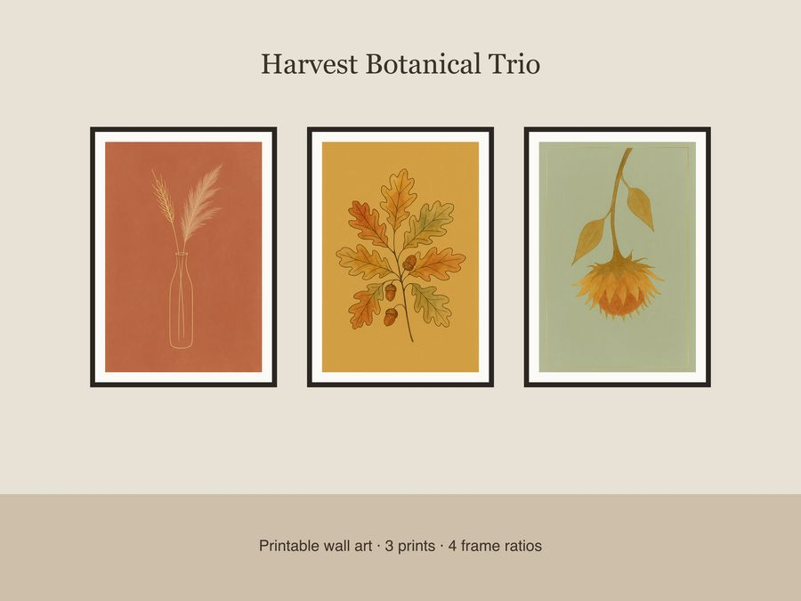

$5.50
Buy nowView on EtsyWarm, elegant harvest color without a single pumpkin in sight. This set of 3 minimalist botanical prints brings sophisticated seasonal style to any wall, gallery arrangement, or entryway. What's included: • 3 unique designs — dried wheat & pampas grass on terracotta, oak leaves & acorns on mustard, minimalist sunflower seed head on sage • Each design in 4 frame ratios: 2x3, 3x4, 4x5, and 11x14 • 12 high-resolution JPEG files total, 300 dpi, ready to print • Thin gold-foil-look accent lines and generous negative space for a refined, gallery-style look How to use: Download, print at home, at a local print shop, or through an online printing service (e.g. Walmart, Costco, Printful). Frame individually or hang as a trio for an instant gallery wall. File formats & sizes: High-res JPEGs sized for 2x3, 3x4, 4x5, and 11x14 ratios — simply choose the size that matches your frame and crop as needed. No physical print or frame is shipped; this is a digital download only. License: For personal use and small-business commercial use (up to 500 sold units of physical prints made from these files). Please do not resell, share, or redistribute the digital files themselves. A note on how these were made: These designs were created by our shop using a combination of hand-drawn line work and AI-assisted tools, then refined and color-graded by us for a cohesive, elegant finish.